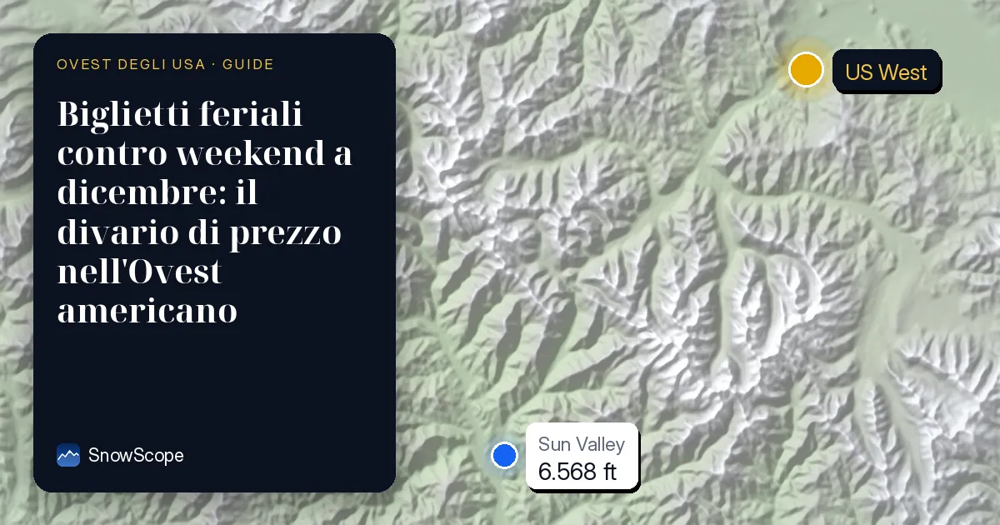

Biglietti feriali contro weekend a dicembre: il divario di prezzo nell'Ovest americano
Il trucco più economico per sciare a dicembre nell'Ovest americano non è un abbonamento né un coupon. È il calendario. Sette stazioni della nostra lista pubblicano un prezzo chiaro feriale o di bassa affluenza, e il divario rispetto al prezzo del weekend è denaro vero.
Le previsioni neve in tempo reale per US West nell'app SnowScopeAltezza neve, allerte powder e mappa 3D, gratis.
Il divario, stazione per stazione
Ski Cooper (Colorado): 49 $ dal lunedì al venerdì fuori dalle festività, 99 $ nel weekend e nei festivi. Lookout Pass (Idaho): 63 $ infrasettimanale con prenotazione, 75 $ nel weekend, 79 $ nel periodo festivo. Montana Snowbowl: 78 $ nei giorni feriali, 85 $ nel weekend e nei festivi.
Mt. Baker (Washington): 98,80 $ dal lunedì al giovedì fuori dalle festività, 115,42 $ dal venerdì alla domenica e nei festivi, tasse escluse. Timberline (Oregon): 129 $ in bassa affluenza, 161 $ nei giorni di punta, che includono i weekend e il periodo dal 21 dicembre al 1° gennaio. White Pass (Washington): online da 69 $ in bassa affluenza e da 89 $ nei giorni di punta, in aumento man mano che le date si esauriscono.

Un'eccezione: i giorni di punta di Wolf Creek sono date fisse, non weekend
Wolf Creek, in Colorado, non distingue per giorno della settimana. Il biglietto adulti costa 96 $ nei giorni normali e 110 $ nei giorni di punta, e a dicembre i giorni di punta sono dal 20 al 23 e dal 26 al 31 dicembre. Un sabato di dicembre prima del 20 è lì un giorno normale.
La neve c'è in un giorno feriale a metà dicembre?
Il risparmio feriale conviene solo se c'è la neve. Nel nostro storico, la quota di inverni con almeno 20 in (50 cm) a metà montagna il 15 dicembre è del 93 % a Mt. Baker, 87 % a White Pass, 85 % a Lookout Pass, 83 % a Montana Snowbowl, 78 % a Timberline, 72 % a Wolf Creek e 70 % a Ski Cooper.
Le altezze tipiche a metà montagna in quella data vanno da 26 in (66 cm) a Ski Cooper a 46 in (116 cm) a Mt. Baker e 52 in (132 cm) a Timberline.
Come sfruttarlo
Pianificate un viaggio dal lunedì al giovedì nella seconda o terza settimana di dicembre: evitate i prezzi del weekend e il periodo festivo, e il nostro storico dice che le probabilità di buona neve sono già alte nella maggior parte di queste stazioni. Aggiungete un venerdì a Ski Cooper e pagate il suo prezzo feriale; aggiungete un sabato e pagate quello del weekend.
Consigli per sciatori
- Prendete due giorni feriali invece di un lungo weekend: è l'upgrade più economico nello sci.
- Evitate il 21 dicembre - 1° gennaio a Timberline e il 20-31 dicembre a Wolf Creek se il prezzo viene prima di tutto.
- Prenotate White Pass presto per il suo prezzo minimo di bassa affluenza, e riservate Lookout Pass per il suo sconto infrasettimanale.
- Mt. Baker vende solo in loco: portate una carta o contanti e arrivate presto.
Riferimenti e crediti
- Ski Cooper, day pass 2026-27 (official) www.skicooper.com/cooper-day-pass/
- Lookout Pass, lift tickets 2026-2027 (official) skilookout.com/lift-tickets/
- Montana Snowbowl, lift tickets 2026/27 (official) montanasnowbowl.com/sbblog/lift-tickets/
- Mt. Baker Ski Area, daily lift tickets (official) www.mtbaker.us/tickets-and-passes/daily-lift-tickets/
- Timberline Lodge, winter lift tickets 2026/2027 (official) www.timberlinelodge.com/activities/winter/lift-tickets/
- White Pass, online day tickets 2026/27 (official) skiwhitepass.com/online-day-ticket-sales
- Wolf Creek Ski Area, tickets and passes 2026-2027 (official) wolfcreekski.com/tickets-passes/
Su questi numeri
Numeri della neve: storico neve SnowScope, 46 inverni passati (1980-81 - 2025-26) alle quote indicate (base, metà, vetta), una ricostruzione della neve passata per un'area corretta per la quota (basata su ERA5-Land; Snow_Hydro 1 km per il Marocco), non i bollettini della località. Neve attuale: la mappa SnowScope. Impianti, piste e quote: mappatura OpenSkiMap. Prezzi: le pagine ufficiali elencate qui sotto, lette il 13 novembre 2026; i prezzi dinamici cambiano con la data e la domanda.
Cita questo articolo
Per ricerca, didattica o stampa: numeri e grafici sono liberamente riutilizzabili con licenza CC BY 4.0 citando così.
SnowScope (2026), Biglietti feriali contro weekend a dicembre: il divario di prezzo nell'Ovest americano, https://snowscope.app/blog/it/2026/11/weekday-vs-weekend-ski-tickets-december-us-west.html, consultato il 2026-11-15
SnowScope (Atlas Labs). (2026, November 15). Biglietti feriali contro weekend a dicembre: il divario di prezzo nell'Ovest americano. SnowScope snow reports. https://snowscope.app/blog/it/2026/11/weekday-vs-weekend-ski-tickets-december-us-west.html
BibTeX
@misc{snowscope2026weekdayvsweekendskiticke,
author = {{SnowScope (Atlas Labs)}},
title = {Biglietti feriali contro weekend a dicembre: il divario di prezzo nell'Ovest americano},
year = {2026},
month = nov,
howpublished = {\url{https://snowscope.app/blog/it/2026/11/weekday-vs-weekend-ski-tickets-december-us-west.html}},
note = {Published 2026-11-15 09:34 UTC; accessed 2026-11-15}
}· CC BY 4.0 · Metodi, dati e strumenti →
Segui US West
Gratis: un messaggio quando arriva la neve e il meteo ogni mattina.